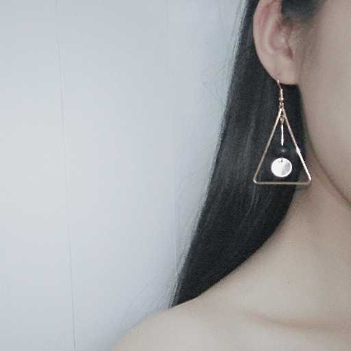

名字:
北川团子
性别:女

介绍:理想是做一个很酷的人
问题
答案
新建于:2017-07-17 03:45:27 PM，更新于2017-07-17 03:45:27 PM
Pre上一页
Next下一页
跳页:
正文: 在南宁的dokidoki女仆执事咖啡厅打工过一段时间
我主要负责外场~
平常工作内容和工作风格是
"主人欢迎回家~"
"我是今天为你服务的女仆团子~今天的女仆有xx xx xx哦~这是本店的菜单~人均底消25~桌游和漫画都在那边~主人今天要吃点什么呢~"
"主人您的xxx做好啦~请慢用哦~"
"主人您的蛋包饭做好啦~今天想要在蛋包饭上画点什么呢~…doki doki ~biu~现在这份蛋包饭已经充满魔法啦~吃了之后会更加幸福哦~"
"主人慢走~下次还要来看团子哦~"
如果主人是一个人，团子会主动上前关心主人陪主人说话~
如果主人是几个朋友一起~工作不忙的时候也会主动上前陪主人打桌游~如果赢了团子的话~可以得到一杯团子做的奖励饮料~如果输了的话~会有一杯黑暗惩罚饮料哦~
(๑❛ꆚ❛๑)手机没电啦~先更到这里！
Pre上一页
Next下一页
跳页: